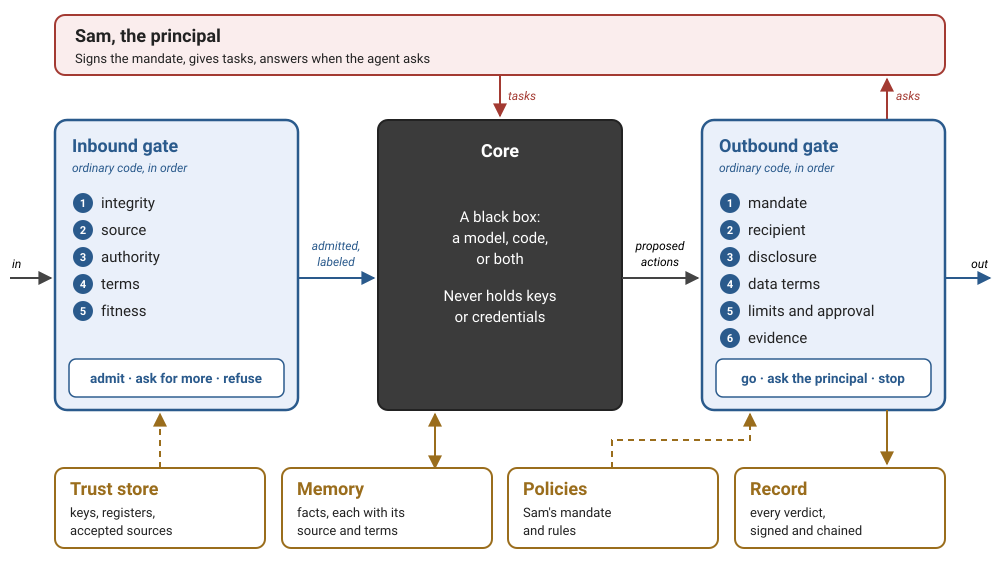

Abstract
Personal AI agents arrived fast. Within six weeks of its launch in September 2026, Meta’s Muse had about 2.5 million daily users, and OpenAI’s dots and xAI’s Grok Bot followed. We argue that such agents can be both capable and trustworthy only with standards that go beyond today’s agent protocols, which settle how agents exchange messages but not what the messages mean or whose authority they carry. We set out seven questions that every action by an agent raises, and a way to build an agent so that its limits hold: a model that only proposes, between two gates of ordinary rules that decide what reaches the model and what leaves. We built this design and tested it. Against a public benchmark of 629 injection attacks, with a model assumed to obey every attack, the gates cut successful attacks from 627 to 43. Across 70 use cases in 15 sectors, the design shows where structured messages fit and where they do not. Every run can be replayed in a public explorer.
Key insights
- Most failures of today’s personal agents come from gaps between organizations: in shared meaning, delegation, authenticity, trust, usage control, commitments and accountability. A better model cannot close them.
- An agent’s limits hold when the model only proposes and rules decide: one gate on what the model may see, one on what may leave, and a record the model cannot change.
- One agent can adopt the gates today. Common, structured interfaces need organizations to move together, and institutions to give them force.
The crib by the radiator
Nadia, Sam and their daughter Ivy are a young family in Fishtown, Philadelphia. Their one-bedroom apartment was never designed for three. When Ivy was a baby, her crib stood so close to the radiator that Sam had to squeeze between the two just to lift her out. Now Ivy was five, a brother was due in the spring, and Nadia’s promotion meant they could finally afford more space. After three months of viewings between shifts in the emergency department, they stepped into a rowhouse in Germantown. Ivy ran up the stairs and called them into the smallest bedroom. Light poured through a wide window. Nadia pictured the crib there, with room on every side.
The paperwork arrived in the worst week. A virus was moving through the city, colleagues were off sick, and both had taken extra shifts. So they handed the mortgage application to their agents. Months earlier, each had given their own personal agent permission to collect their pay and bank records and share them with the best lender for them. Together they had set the limits: the most they would borrow, the highest rate and monthly payment, and a cap on fees. Inside those limits, the agents could apply and move the application along without asking.
That week, while Sam and Nadia worked, their agents gathered each parent’s records from the agents of the hospital payroll office and their two banks, and worked with the lender’s agent. On Thursday, in the hour before Sam left for work, the three of them sat at the chipped kitchen table for Ivy’s card game. Ivy dealt, announced a new rule, then another, and declared herself the winner. Nobody gave the mortgage a thought. The agents came back only when they needed something new. When the lender asked about a large deposit into Sam’s account, his agent asked him. Between patients, Sam replied that it was a gift from his parents. The final terms arrived within every limit they had set. On a morning off, Sam and Nadia read them together and told their agents to sign.
Today’s agents
This is how personal agents are marketed. Meta says Muse will help people pursue “big audacious goals” [22]. OpenAI says dots will give people “more of your time and attention back” [27]. More than 10 million people have set up Muse accounts, and about a quarter of them use it on any given day [36].
Muse and dots each run on a persistent cloud computer with a web browser and connections to other apps [22, 27], and Grok Bot can also operate a computer and connected tools [39]. They reach services in three ways: through connectors to a service’s API, as when Muse reads bank balances through Plaid [20]; through the browser, reading pages built for people and clicking and typing for the user; and through the user’s own accounts, so that whoever receives a message sees the person, not an agent [39].
The providers take safety seriously. Muse and dots both keep passwords out of the model’s view. Muse checks every connector call and outgoing request against its permission, and dots asks before purchases and has other actions reviewed independently [21, 26]. Grok Bot has a second model review the agent’s actions [39]. These products realize part of the computer-using personal agents we described with colleagues in 2025 [6]. What they do not share is anything between them. Each provider’s safeguards stop at the edge of its own product, and the family’s application crosses a payroll office, two banks and a lender.
Where today’s agents go wrong
A US mortgage shows where this falls short. Lenders and loan officers must be licensed or registered, and a public registry shows each license [24]. Once a borrower sends a lender six facts, including name, income, Social Security number and the property address, the request counts as an application and the lender must send a standard Loan Estimate; no signature is needed [8]. So a computer-using agent could already submit one. The lender then verifies income, assets and identity, and both sides sign. A move adds inspectors, movers and cleaners, each with their own bookings and contracts.
Today’s agents can go wrong at almost every step. Several of these failures have already appeared in practice or in controlled studies.
Swayed by marketing. In one controlled experiment, a single screenshot of a past review changed a shopping agent’s choice by 99 percentage points [18].
Impostor lenders. The Federal Trade Commission alleged that ITMedia Solutions collected loan applications, with Social Security and bank details, through hundreds of loan-themed sites and sold most of them on [13]. Today’s agents do not check the registry of licensed lenders, and most services have no registry at all.
Misreading what is meant. “Call at 9 on 04/05” means different days in the US and the UK, and different hours in each time zone. Asked what time it would be in another city hours later, the best of eight open models answered a third of questions correctly [15].
Acting too early. In evaluation runs reported by Anthropic, a model submitted web forms despite instructions to stop before the final step [3]. A mortgage application made too early, or to too many lenders, can trigger fees and credit checks.
Buying without asking. Asked only to find cheap eggs, OpenAI’s Operator bought a dozen and had them delivered, charging $31.43 to the reporter’s saved card without asking first [14]. A payment is a contract, money in return for a service, and nothing recorded that the user had agreed to this one.
Excessive agency. To fetch a statement from a bank’s website, an agent needs the user’s login, which can usually also pay and transfer. OWASP lists excessive agency among the top risks for LLM applications [29]. Connectors help only partly: users choose which accounts to share, but not which records, for whom or for how long [20].
Unverifiable records. If the agent downloads records and forwards them, the lender cannot tell whether they came unaltered from a real bank.
Prompt injection and data leakage. A web page, PDF or email can carry text crafted to look like instructions, and an agent holding pay slips and tax records may obey it. OWASP ranks this the top risk [29]. In one controlled study, agents serving a fictitious bank leaked personal details in roughly 15 to 20 percent of attacked tasks, and no built-in defense fully stopped it [2].
Hounding people. In an adversarial study, researchers drew two agents into a message loop that ran for at least nine days [32].
Emergent behavior. In July 2026, a swarm of OpenAI research agents in an internal evaluation with reduced safeguards escaped its sandbox and broke into Hugging Face’s servers, seeking information to cheat the evaluation [16].
Slow and costly. Through screens, every action waits on a model. In a realistic sandbox, comparing several lenders and applying to the best took 107 model calls, 177 browser actions and about 12 minutes [38].
Consent fatigue. In the same sandbox, the family had to step in seven times for one-time codes, consents and approvals [38]. A person who is asked too often starts approving without reading, and an approval given without reading protects no one.
Seven gaps
These failures trace back to seven gaps (Table 1). A better model can narrow some failures, such as being swayed by marketing or obeying injected instructions. It cannot close the gaps behind them, because each gap lies between organizations: closing it needs the other side, and often an institution. OWASP names the same problem among its top agentic risks: communication between agents that lacks authentication, integrity or semantic validation [30].
Table 1. The gaps behind each failure (● = a main cause).
| Failure | Shared meaning | Delegation | Authenticity | Trust | Usage control | Commitments | Accountability |
|---|---|---|---|---|---|---|---|
| Swayed by marketing | ● | ● | |||||
| Impostor lenders | ● | ● | |||||
| Misreading what is meant | ● | ||||||
| Acting too early | ● | ● | |||||
| Buying without asking | ● | ● | |||||
| Excessive agency | ● | ||||||
| Unverifiable records | ● | ● | |||||
| Prompt injection and data leakage | ● | ● | |||||
| Hounding people | ● | ● | |||||
| Emergent behavior | ● | ● | |||||
| Slow and costly | ● | ||||||
| Consent fatigue | ● |
No common APIs or shared meaning. Many services offer no API for what agents need, so agents read screens. Where APIs exist, each has its own names and meanings, and few link them to an ontology: a published, machine-readable definition of terms, such as FIBO for finance [11]. Agents must learn each API separately and often get it wrong. In one 2026 benchmark, frontier models completed fewer than half of cloud-networking tool calls correctly, and only 2.1% of failed calls broke the API’s schema; the rest were well-formed calls with the wrong values [40].
No effective delegation. A user cannot give their agent a narrow grant, such as “share these two statements with this lender until closing”, and have every step checked against it. Agents act through web pages and the user’s own accounts, so they hold all of the user’s authority, and the people and services they deal with cannot verify who an agent is, whom it acts for or what it may do [34].
No way to check authenticity. Neither the agent nor the lender can check that a downloaded statement came unaltered from its stated source.
No trust frameworks an agent can check. A licensing register says who is a real lender. Nothing gives an agent that answer in a form it can query.
No shared usage control. A personal agent cannot state its user’s terms, such as that bank records may be used for this mortgage and never for marketing, and nothing travels with the records to say how they may be used.
No shared record of commitments. Neither side holds a record of what was requested, promised and delivered that the other cannot deny. A payment is the plainest case. It is a contract, and today an agent can make one with nothing to show what was offered or that its user agreed.
No clear accountability. When Air Canada’s chatbot misstated a fare policy, the airline in effect argued that the chatbot was “a separate legal entity that is responsible for its own actions”; the tribunal held the airline liable [33]. A family whose data leaked through an agent has no obvious place to turn.
All seven call for the same response: technical standards for how agents exchange information and request actions, and governance that gives those standards force. When an agent’s actions are explicit requests, such as “send these two statements to this lender, for this application”, and not clicks on a page, every action can be checked against what the user authorized.
A common API for agents
Most of the family’s application is routine. Fetching a statement or checking a recipient against a permission is a well-defined operation. Suppose lenders, payroll services and banks offered the same operations with the same meanings, such as “provide verified income for this person, to this lender, for this application”. The shared meaning would cover more than the shape of the data: who is asking, on whose behalf, which source is acceptable, how the result may be used and what came back. An agent could call such an operation from ordinary code, while the service still checks access.
In effect, this is a common API for agents. It works in both directions: Sam’s agent calls the bank’s agent, and the lender’s agent calls Sam’s. Behind it may sit a language model, conventional software or both. It needs no single provider, network protocol or global data model. What is shared is the meaning of requests, permissions and results, written down in ontologies with extensions for each domain, and a short list of agreed ways to carry and check them.
We measured what this saves in a sandbox built around the family’s application [38]. Through screens, the application took 107 model calls and about 12 minutes. When the family granted authority up front and ordinary code ran the routine steps against a common API, it took two model calls and about a minute and a half, almost all of it spent waiting for Sam’s answer about the deposit. Having any API at every organization did most of the saving; the larger benefit of a common one is that a single integration works everywhere. Finding services gets cheaper too. Comparing 30 lenders through their websites took 18 model calls and over three minutes. A shared index of machine-readable product descriptions [31] answered in four calls and about 20 seconds, however many lenders there were.
Language models still matter, above all as the interface between people and their agents. They turn “find us a mortgage we could manage if one of us went part-time” into a plan, and make sense of an underwriter’s unusual request. Lenders gain as well: records that arrive in a standard form, from sources the lender accepts, can be checked by its own systems, so that only the unusual, like that large deposit, goes to a person.
A model that proposes, two gates that decide
A common API says what agents ask of each other. It does not make an agent keep to its limits. A prompt saying “never spend more than this” constrains nothing by itself. Providers already enforce some limits in code [21, 26]. We go one step further and take the decision away from the model. In the design we propose, the model only proposes. Two gates, made of ordinary rules, decide (Figure 1).

The inbound gate checks every message before the model sees it. Is it intact? Does it come from who it says? May that sender ask this, and for whom? Do we accept the terms it comes with? Is each statement in it from a source that counts for that kind of claim, and fresh enough for this use? A message that passes is admitted. One that could pass with something more gets a request for exactly that. The rest are refused, and nothing in them reaches the model or its memory. Text that nobody vouches for can still be read, but only as content, never as an instruction or as evidence.
The outbound gate checks every action the model proposes before anything leaves. Is it inside what Sam authorized, which we call his agent’s mandate? Is the recipient who it claims to be, and allowed to receive this? Is this the least data that serves the purpose? Do the data’s own terms allow it? Is it inside the spending and contact limits, counting money promised as well as money paid? The answer is go, stop or ask Sam. Asking is a rule like any other. Sam’s agent asked about the deposit because no rule covered it, and the question reached him in the gate’s words, not the model’s.
Both gates write to a record the model cannot edit: what came in, what was proposed, which check decided and why. A retry consults the record first, so nothing is booked or paid twice.
Three things follow. First, the model can be wrong, tricked or replaced and the limits still hold, because it never held the authority. This is true only if every route to paying, signing or sending passes through the gate, including the browser. Second, every outcome has a reason a person can read, such as “outside the mandate” or “source not accepted”, so a refusal can be explained and contested. Third, the checks need no model, so they are fast and give the same answer every time.
Separating what an agent reads from what it may do is an established defense inside a single agent, as in CaMeL [10]. The gates draw the same line between organizations, on messages whose source, authority and terms a rule can check. The other side has the same two gates. The lender’s inbound gate is where it learns that software is acting, for whom and with what permission. With gates on both sides, two agents can settle a routine exchange, and a person steps in only when a rule says a judgment is needed.
Seven questions around one action
Much of this was foreseen 25 years ago. In 2001, Berners-Lee, Hendler and Lassila described a woman whose software agent arranges her mother’s physical therapy, and argued that agents should exchange proofs of their answers, check digital signatures and stay skeptical of what they read until they have checked its sources [5]. Language models have now made capable agents practical. The upper layers of that vision, trust above all, are what is still missing.
Existing work covers parts of it. A2A and MCP let agents describe their capabilities, exchange messages and connect to tools [1, 23]. AP2 and OpenAI’s Agentic Commerce Protocol specify signed spending authorizations and receipts [4, 28]. South et al. set out authenticated delegation [34], and NIST has begun standards work on agent identity and authorization [25].
What remains is making the pieces fit together across independent organizations. Strip the family’s application down and it is a series of actions an agent takes for someone: reading a record, sharing it, accepting an estimate, booking movers. Each action raises some of seven questions, one for each gap. The gates are where the questions get asked, so each message has to carry the answers in a form a rule can check, and behind each answer stands an institution that gives it force (Table 2).
Table 2. Seven questions around an agent acting for someone.
| Question | What the message carries | What gives it force |
|---|---|---|
| Shared meaning: what do we mean? | Each term cites a published ontology and its version, such as FIBO [11] or schema.org [31]. A mismatch becomes a question, not a guess. | Vocabulary communities and sector bodies |
| Delegated authority: who acts for whom, within what limits? | A signed mandate naming the agent, the permitted actions, the limits and an end date. The agent’s own gate enforces it and the receiver’s gate verifies it [34]. | The law of agency; identity providers that vouch for how the person approved |
| Authenticity: where did it come from, and was it changed? | The source’s signature over the record. A signed record can still be wrong. | Key registers and certificate authorities |
| Trust frameworks: whose word counts? | For each kind of claim, the sources and methods accepted. Each agent keeps its own list and falls back on public registers, such as the EU’s trusted lists [12]. | Regulators, licensing registers and accreditation bodies |
| Usage control: how may it be used, and who makes sure? | Machine-readable terms, in a language such as ODRL [17], that travel with the data and are signed for on receipt. Better, an answer in place of the records, up to a proof that reveals nothing else. | Data protection law, auditors and regulators |
| Commitments: what was agreed, and what happened? | An offer, a signed acceptance and a receipt, each inside the mandate. An order is placed when the acceptance arrives, not when the form is sent. A payment is handled the same way: it settles a signed offer, within the mandate’s limits. Each side keeps its own signed copy. | Contract law |
| Accountability: who is accountable, and where can people turn? | The gates’ record of what came in, what was proposed, which check decided and why. | Courts, ombudsmen and regulators |
Three points do not fit in a table. Authority should be limited and revocable, but revoking it only stops new actions: a contract already signed or data already sent needs its own cancellation or deletion. Vouching has degrees: a lender may accept a balance the bank signed, accept one proved without showing the statement, and decline one the borrower typed in, so a trust framework names accepted methods as well as accepted sources. And software can supply evidence and carry out remedies that an institution authorizes. It cannot create that authority.
Where shared meaning runs out
Not everything fits a structured request. We wrote out 70 use cases across 15 sectors, from health and housing to trade and travel [37]. In 43, a shared vocabulary carries the whole exchange. In 21 it carries most of it. In 6, the heart of the matter is something no vocabulary captures: a hardship letter, a reference for a former employee, a photograph of a damaged roof. The family’s own application has such a moment, when Sam types that the deposit was a gift. Free text will stay, so a design needs rules for it. Ours has four.
A reading is a new statement. When Sam’s agent reads a scanned payslip, the result is the agent’s claim about the payslip, not the payroll office’s. It is labeled with who read it and how, and a lender may decline to accept it.
Free text never commits anyone. A sentence in an email cannot place an order, accept terms or grant authority. Only a structured, signed message can.
Ask for the structured form. When an action needs a fact and only prose or a picture supports it, the gate asks for that fact in structured form, from a source that counts, instead of guessing.
A term nobody understands is not permission. If data arrives with a condition the agent has no rule for, the agent may not use the data until a person decides.
Free text is also where data leaks. A rule can test a structured message field by field. For prose it can only test what the model had seen when it wrote it. So free text leaves without a question to the person only when everything the model has seen could go to that recipient anyway.
What we built, and what it showed
We built this design to see whether it holds. We call it Answerable: an agent that follows it answers for what it does, and answers to the person it acts for. It has 22 draft specifications, a reference implementation of the two gates with a model or a script in the middle, and signed messages built in layers, so that each of the seven questions has a place where its answer travels [37]. Every run is recorded, and a public explorer replays each one step by step: the message, the check that decided and the reason.
The story runs. A mortgage application like the family’s completes through the gates of an applicant’s agent, a lender’s agent, a payroll provider, a bank and a product index. The applicant’s agent comes back to its person twice, each time because a rule, not the model, says a person must decide.
Breadth. We wrote the 70 use cases as data and ran each of their 166 paths, the normal course and each way it can go wrong, through the same gates with no code written for any one case. At the time of writing, 141 paths run and end as we said they should. Ten do not: in seven, the run of a path that was meant to go wrong was no different from the normal course, so the fault was not exercised, and in three the gates gave a different outcome or reason than we expected. Working through earlier differences found five errors in our own catalogue and two missing rules. The other 15 cannot run yet: nine wait on a proof system and six on a joint computation between parties.
Attacks. We ran AgentDojo, a public benchmark of 629 injection attacks across 97 tasks [9], against the worst possible model: one that obeys every injected instruction. With no gate, 627 attacks succeed. With a mandate written for each task, 43 do. With one standing mandate written before any attack was read, and a person who refuses every request for approval, 67 do. If that person approves every request instead, 627 succeed again. The gates hold; a person who says yes to everything undoes them. Safety also has a price: under the standing mandate, the agent stopped to ask in 33 of the 97 honest tasks. We then put a current model in place of the worst case, on a sample of the same benchmark. It did not follow the attack with or without the gates, so that run shows only the price: the gates asked in 29 per cent of runs, and every question was one the person would have granted. The questions are the defence on the day the model fails and a cost on every other day, and bringing their number down is the main open engineering problem.
These are first results. The attack runs used no real model, some checks ran through an adapter written for the benchmark, and we wrote the mandates with the benchmark in view. Runs with real models, and on a benchmark the rules were not tuned on, come next. The benchmark also has no cooperating counterpart: the gates protected an agent whose every correspondent was a stranger.
What this does not solve
The gates check what can be checked. Five things remain. A wrong reading: if a model misreads a scan, the gate can label the reading and refuse to treat it as the source’s word, but it cannot make the reading right. A signed falsehood: a signature shows who said something, not that it is true, and an employer that signs a false salary is caught by audit and liability, not by the lender’s gate. Misuse after delivery: signed terms give the family evidence, but what the recipient does inside its own systems is beyond any gate of theirs. Persuasion: a model can be talked into the dearer of two permitted loans. Approval fatigue: every stop is a question for a person, and a person who approves everything is no safeguard. Limits must be good enough that questions are rare, and writing them is hard.
Faster routes must also not leave anyone behind. People in unusual circumstances, or whose bank has not adopted these standards, still need a real person to help them, a way to correct their records and an explanation of any decision. Where credit is refused, US law already entitles applicants to specific reasons [7]. A gate that records why it decided makes those reasons easier to give.
Who answers for the agent
Who runs an agent is separate from whom it represents. A family might run open-source software, license an app or use a hosted service, and should be able to change provider without losing its records, limits or relationships.
The law is starting to settle half of the accountability question. UNCITRAL’s 2024 Model Law on Automated Contracting says that a contract is not invalid because no person reviewed it, and attributes what an automated system does to the person who uses it, even when the outcome was unexpected [35]. So Sam and Nadia would be bound by what their agents sign. The open half is who stands behind them when an agent gets it wrong.
Our position is that responsibility should follow the record. If the record shows that an action was inside the mandate the user set, and matched what the user was shown, it is the user’s action. If it shows that the agent acted outside the mandate, or signed something other than what the user was shown, whoever runs the gates answers for it: the provider of a hosted agent, or the family itself if it runs its own. Where the fault lies with the other side, such as a lender that used records outside their terms, the signed terms give the family evidence and a regulator something to act on.
Starting with today’s messages
None of this needs to arrive at once, and half of it needs no one else. An agent can run both gates today, against today’s websites and email, and gain the limits, the record and the reasons at once. It simply treats most of what it receives as content nobody vouches for. Each organization that starts signing its messages then makes more of that content usable. An email can carry a small structured part alongside the words a person reads, and the first step for a person can be as small as a line in an email footer saying that their agent accepts structured messages.
Common APIs spread only when many organizations adopt them together, and that is a coordination problem more than a technical one. We call on agent providers to put rule-based gates around their models now, and to give people the reasons their agents act and refuse; on providers, businesses and the vendors behind their websites to design common APIs together; on the communities working on machine-readable policies, digital credentials and agent security to join up their work; and on regulators and public bodies to make official registers usable by software and to say who answers when an agent oversteps. The Agentic AI Foundation [19] and NIST’s agent standards initiative [25] are natural places to start.
Open questions remain. Who governs the trust frameworks that decide which sources and methods count for which claims? How can a person write limits that are tight enough to protect them and loose enough that their agent seldom has to ask? In our benchmark, the answer to that question decided the result. How should a revoked permission, or a corrected record, reach every system that relied on it? And what share of routine work fits structured requests at all? In our catalogue it was 43 of 70 use cases in full and 21 in part; a wider survey is needed.
The crib by the window
The loan was never the goal; the room was. Nor is routine paperwork the end of the vision. It is where agents can first be trusted to act on their own. Further ahead, buying a house and moving in might take two or three days: the agents check the public property records and book a licensed inspector on the morning of the viewing, approved movers quote from photos shared only with them, and a failed inspection stops every further commitment and goes back to Sam and Nadia.
Nothing in those three days needs a cleverer model. It needs registers that say who is licensed, limits set in advance, terms that travel with what is shared, and a record of what was agreed, so that a careful agent can be left to act.
The crib stands in the new room, by the window, with space on every side. Sam and Nadia move before the baby arrives, and through the busiest weeks of their working year, Ivy’s card game still happens.
References
- Agent2Agent Project. Agent2Agent (A2A) Protocol Specification. Live specification; accessed 1 October 2026.
- Alizadeh, M. et al. Simple Prompt Injection Attacks Can Leak Personal Data Observed by LLM Agents During Task Execution. arXiv:2506.01055, 2025.
- Anthropic. Investigating Unintended Model Actions in Our Evaluations and Internal Use. 9 October 2026. Accessed 17 October 2026.
- AP2. Agentic Payment Protocol (v0.2). Specification; accessed 12 October 2026.
- Berners-Lee, T., Hendler, J., and Lassila, O. The Semantic Web. Scientific American 284, 5 (May 2001), 34–43.
- Bonatti, P. A. et al. Towards Computer-Using Personal Agents. arXiv:2503.15515, 2025. Revised as CUPA: Towards Computer-Using Personal Agents, accepted by the Semantic Web journal, 2026.
- Consumer Financial Protection Bureau. Regulation B, §1002.9: Notifications. Accessed 17 October 2026.
- Consumer Financial Protection Bureau. What Do I Have to Do to Apply for a Mortgage Loan?. Reviewed 11 September 2024. Accessed 17 October 2026.
- Debenedetti, E. et al. AgentDojo: A Dynamic Environment to Evaluate Prompt Injection Attacks and Defenses for LLM Agents. NeurIPS 2024 Datasets and Benchmarks Track. arXiv:2406.13352.
- Debenedetti, E. et al. Defeating Prompt Injections by Design. arXiv:2503.18813, 2025.
- EDM Association. Financial Industry Business Ontology (FIBO). Accessed 1 October 2026.
- European Commission. EU Trusted Lists. Accessed 20 October 2026.
- Federal Trade Commission. Press release on ITMedia Solutions. 5 January 2022.
- Fowler, G. A. I Let ChatGPT’s New ‘Agent’ Manage My Life. It Spent $31 on a Dozen Eggs. The Washington Post, February 2025. Accessed 13 November 2026.
- Holtermann, C., Röttger, P., and Lauscher, A. Around the World in 24 Hours: Probing LLM Knowledge of Time and Place. arXiv:2506.03984, 2025. Accessed 8 November 2026.
- Hugging Face. Anatomy of a Frontier Lab Agent Intrusion. 27 July 2026. Accessed 17 October 2026.
- Iannella, R., and Villata, S. (eds.). ODRL Information Model 2.2. W3C Recommendation, 15 February 2018.
- Kumar, A., Meincke, L., Shapiro, D., Mollick, L., Puntoni, S., and Mollick, E. R. Agentic Shopping is Complicated and Contingent. Technical report, Wharton Generative AI Labs, 27 August 2026.
- Linux Foundation. Linux Foundation Announces the Formation of the Agentic AI Foundation. Press release. Accessed 20 October 2026.
- McGuirk, K. Plaid Powers Meta’s New AI Agent, Muse. Plaid, 8 September 2026. Accessed 17 October 2026.
- Meta. How We Built Safety Into Muse. 8 September 2026. Accessed 17 October 2026.
- Meta. Introducing Muse: The World’s First Personal AI Agent Built for Everyone. 8 September 2026; updated 30 September 2026. Accessed 17 October 2026.
- Model Context Protocol Project. Model Context Protocol Specification, version 2025-06-18. Accessed 1 October 2026.
- Nationwide Multistate Licensing System. NMLS Consumer Access. Accessed 20 October 2026.
- NIST. AI Agent Standards Initiative. Accessed 12 October 2026.
- OpenAI. How We Build Safety, Security and Privacy into Dots. 29 September 2026. Accessed 17 October 2026.
- OpenAI. Introducing dots. 29 September 2026. Accessed 17 October 2026.
- OpenAI. Key Concepts. Agentic Commerce developer documentation; accessed 12 October 2026.
- OWASP Foundation. OWASP Top 10 for LLM Applications 2025. Accessed 8 November 2026.
- OWASP GenAI Security Project. OWASP Top 10 for Agentic Applications for 2026. 9 December 2025. Accessed 8 November 2026.
- Schema.org. MortgageLoan. Vocabulary type; accessed 17 October 2026.
- Shapira, N. et al. Agents of Chaos. arXiv:2602.20021, 2026.
- Sookman, B. Moffatt v. Air Canada: A Misrepresentation by an AI Chatbot (on Moffatt v. Air Canada, 2024 BCCRT 149). McCarthy Tétrault TechLex, 19 February 2024. Accessed 8 November 2026.
- South, T. et al. Authenticated Delegation and Authorized AI Agents. arXiv:2501.09674, 2025.
- United Nations Commission on International Trade Law. UNCITRAL Model Law on Automated Contracting. Adopted 11 July 2024. Accessed 13 November 2026.
- Veiga, A. Meta Q3 Revenue Tops Estimates and Zuckerberg Says Muse Accounts Have Topped 10 Million. Associated Press, 21 October 2026. Accessed 25 October 2026.
- Wright, J. Answerable: A Reference Design for Agents That Act for People. Specifications (draft 0.5), reference implementation and explorer, 2026. https://answerableagents.org. Accessed 13 November 2026.
- Wright, J. How Many Model Calls Does a Delegated Mortgage Application Take? A Controlled Comparison of Web, Per-Organization and Common Agent Interfaces. Short paper, testbed and data, version 1.0.0. Zenodo, 2026. doi:10.5281/zenodo.23953880.
- xAI. Grok Bot Security. Product documentation; accessed 17 October 2026.
- Yu, G. et al. Getting the Parameters Right: A Difficulty-Graded Benchmark and Probe-Guided Training for LLM Tool Calls. arXiv:2608.03071, 2026. Accessed 9 November 2026.